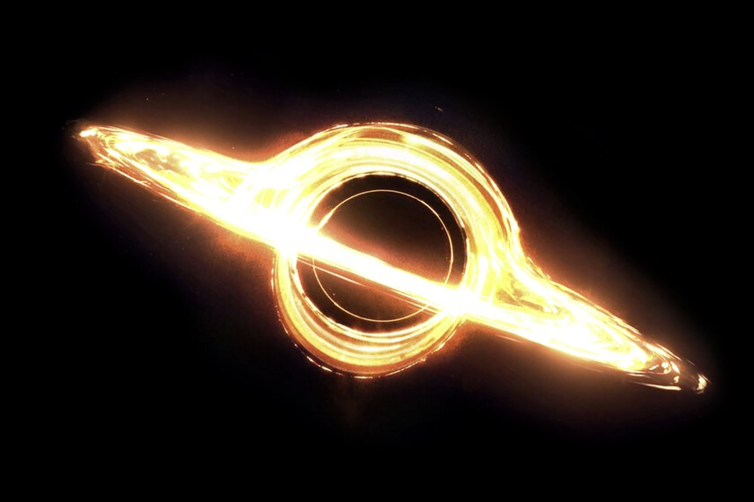

TON 618 es uno de los objetos astronómicos más impresionantes conocidos por la humanidad. Es un cuásar extremadamente luminoso que alberga uno de los agujeros negros más masivos jamás descubiertos. Un cuásar es el núcleo brillante de una galaxia activa que emite cantidades colosales de energía, alimentado por un agujero negro supermasivo en su centro. Características principales de TON 618:
Ubicación: TON 618 se encuentra a aproximadamente 10.4 mil millones de años luz de la Tierra, en la constelación de Canes Venatici.
Agujero negro supermasivo: El agujero negro en el centro de TON 618 tiene una masa estimada en 66 mil millones de veces la masa del Sol (66 mil millones de masas solares), lo que lo convierte en uno de los agujeros negros más masivos descubiertos hasta ahora.
Brillo: TON 618 es extremadamente brillante, emitiendo más luz que toda una galaxia típica. Se cree que el cuásar está emitiendo más de un trillón de veces la cantidad de energía que el Sol.
La luz que vemos hoy de TON 618 ha viajado miles de millones de años hasta llegar a nosotros, lo que significa que observamos este cuásar tal como era en una etapa temprana del universo. En términos cosmológicos, se encuentra en una época en la que el universo tenía solo unos 3 mil millones de años.
El estudio de objetos como TON 618 ayuda a los astrónomos a entender mejor los agujeros negros supermasivos y el papel que juegan en la evolución de las galaxias y el universo. Aunque su tamaño y luminosidad son impactantes, aún queda mucho por aprender sobre este tipo de fenómenos extremos.